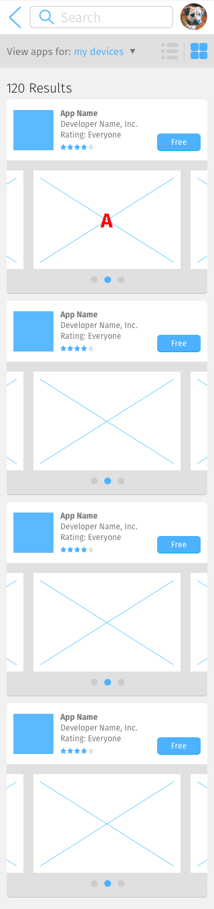
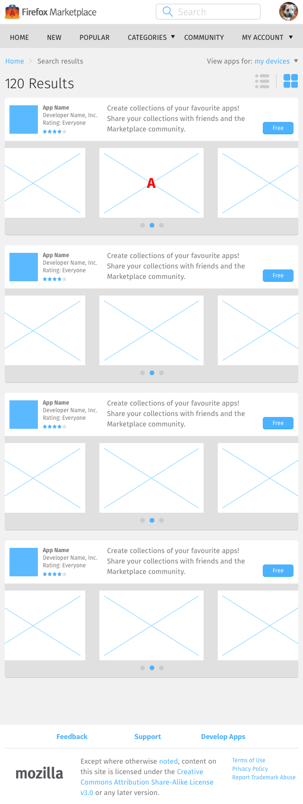
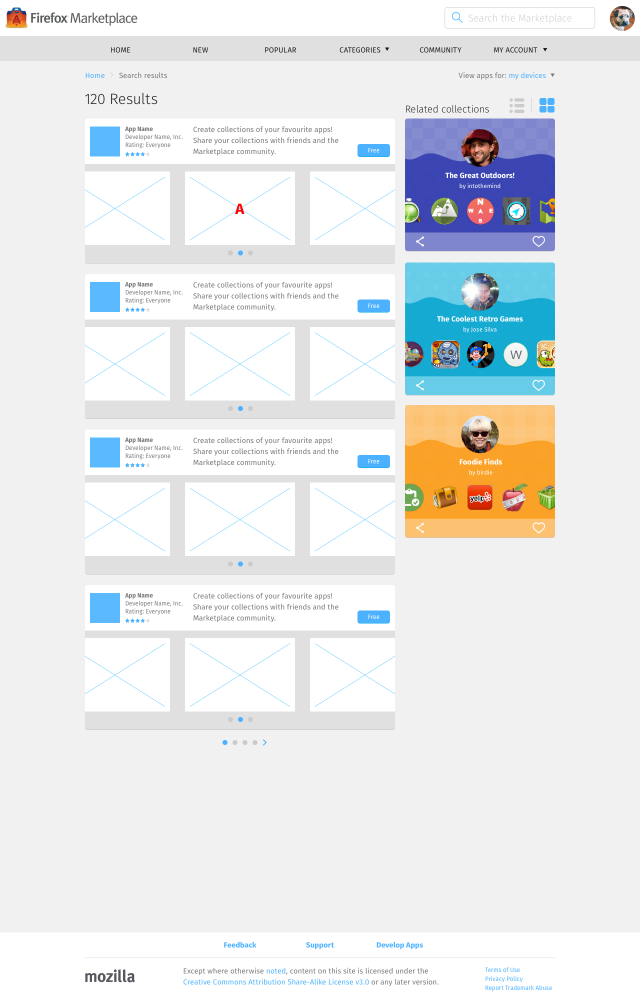

<div class="container">
	<div class="row">
		<div class="col-sm-12 col-md-12 col-lg-12">
			<h1>Search Results &rarr; Populated, Gallery Layout</h1>
      
      
      
      
       
      
      
      <p class="longText">The gallery layout search results page is identical to the list layout in every respect, except:</p>
      
      <ol class="longText letters">
        <li>Each <strong>App Listing</strong> has a second row that contains thumbnails of app screenshot/video.</li>
      </ol>

		</div>
	</div>
	<!-- Pagination. If you have more than one page, set the multipage variable in the Frontmatter to true. Editing the pagination code happens in /_includes/homePagination.html.
		NOTE: This is currently broken in the Jekyll ver of this template.
		-->
		{% if page.multipage %}
			{% include homePagination.html %}
		{% endif %}
